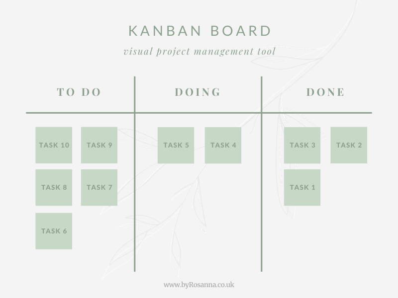

<div class="user-dashboard">
<div> <h1>Welcome to Smart track</h1></div> 
  <div class="sidebar" [ngClass]="{'expanded': isSidebarExpanded}">
      <button routerLink="/project" class="button-link">View Projects</button>
  </div>
  <div class="logo-container">
      <!-- 
       -->
      
  </div>
</div>
